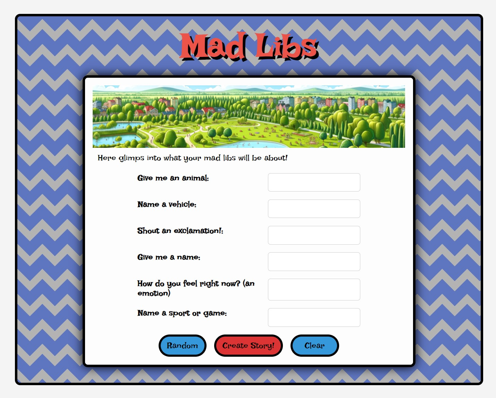
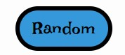
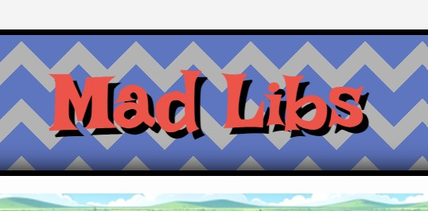
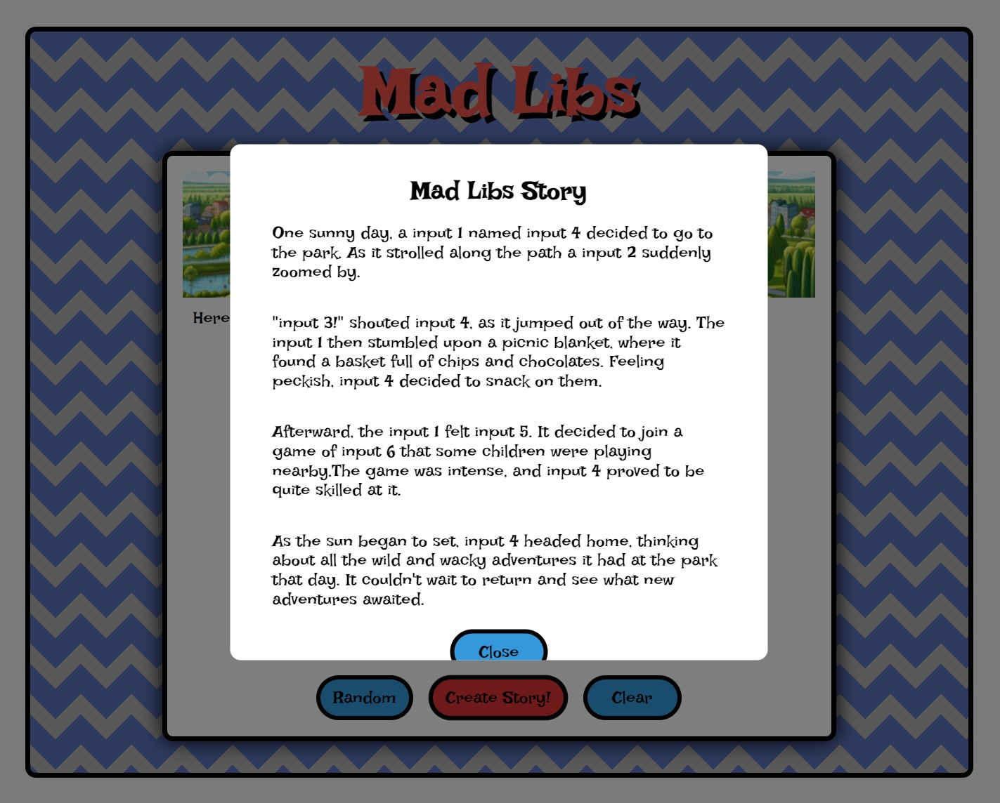
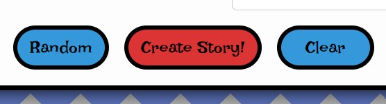

Madlibs 2.0 Visual and UX/UI Enhancement
Project Summary
The current Madlibs 2.0 project is functional yet far from optimal. Although it is close to my original design, there are rooms for improvment in user experience. By enhancing some visual elements and interaction feedback, I hope to create a Madlibs that is more enjoyable for the user.
Project Description
My first focus will be on bringing functionality to the "Random" button, which will serve to automatically populate the input fields with a random selection of words, adding an element of surprise and spontaneity to the story creation process.
Furthermore, to ensure the "MADLIBS" title stands out as the focal point, I plan to redesign the background. The aim is to tone down its current vibrancy, allowing for the title to be more readable and inviting.
To further enrich the storytelling experience, I am expanding the narrative options by adding a collection of new and exciting stories that users can bring to life with the "Create Story" button.
Lastly I intend to revamp the interactive animations for all buttons. Moving away from the dimming effect on hover, I will implement a brighter highlight to symbolize the burst of creativity that Madlibs is all about. I will also restructure the layout of the buttons to include spacing between them, enhancing the overall usability and visual layout of the project.
These deliberate enhancements are steps towards transforming my Madlibs web project into an even more engaging and intuitive platform for users to enjoy crafting and sharing their unique stories.
Expert Feedback
Ofelia Viloche Pulido - MFA Design, UC Davis
Des 50 Lecturer
As I take a look at your Mad Libs project, I'm immediately struck by the infectious energy of the design. The chevron pattern is a smart choice, playful enough to draw the eye without stealing the show from the task at hand. The color scheme is equally thoughtful, with its bright, welcoming hues that invite participation from a diverse audience. You've got a keen sense of how to set the stage for creativity, which is the heart of Mad Libs. However, the true test of design is in the details. For instance, the text against the vibrant background could benefit from a touch more contrast to ease the strain on the eyes, ensuring that the fun of the game isn't overshadowed by a battle to decipher words. And while the buttons are well-placed and distinct, guiding the user intuitively from one step to the next, a bit of guidance could enrich the experience. Not everyone might be familiar with the concept of Mad Libs, and a small tooltip or help icon could open the door to newcomers without cluttering your clean design.
Moving on to the generated story, you're clearly on the right track. The template promises a cascade of giggles and raised eyebrows, as all good Mad Libs should. Yet, variety is the spice of life, and a few more story options might keep users coming back for more. Imagine the delight of discovering a new narrative with every visit, the anticipation of the unexpected—it's a powerful draw. And speaking of returning, have you thought about ways to capture those golden moments? A simple feature to save or share completed stories could transform a solitary chuckle into a shared belly laugh. As you continue to refine your project, keep your ears open to those who play your game. Their insights will be the compass that guides you from a good experience to a great one. And remember, the magic of Mad Libs isn't just in the words we choose, but in the memories they create.